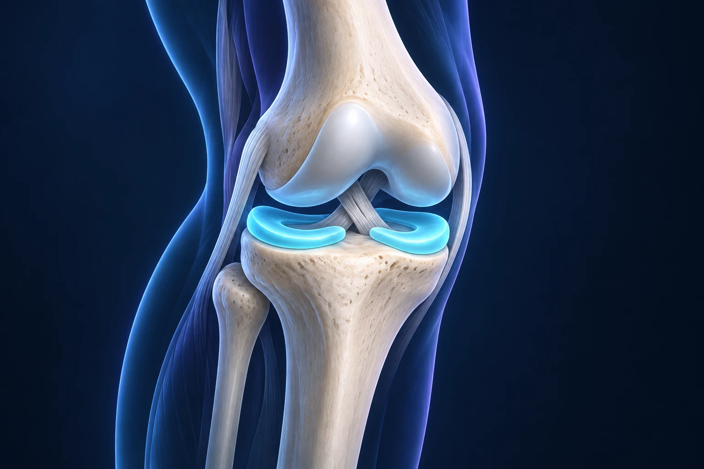

IRM du genou : comment comprendre son compte rendu ?
Publié le

Lire un compte rendu d’IRM peut inquiéter lorsque plusieurs anomalies y sont décrites. Ce document répond à une question d’imagerie ; il ne constitue pas, à lui seul, une ordonnance ni une indication d’opération. L’objectif de la consultation est de relier ce qui apparaît sur les images à ce que vous ressentez.
Que montre une IRM du genou ?
L’IRM permet d’étudier notamment les ménisques, les ligaments, les tendons, le cartilage et l’os. Le radiologue analyse les images et rédige le compte rendu. Les radiographies et l’IRM n’apportent pas exactement les mêmes informations : le choix de l’examen dépend de ce que le médecin cherche à comprendre. RadiologyInfo, ACR/RSNA : l’IRM du genou.
Quatre termes à replacer dans leur contexte
- Épanchement : du liquide est présent en quantité accrue dans l’articulation. Le terme ne précise pas, à lui seul, pourquoi.
- Chondropathie : une anomalie du cartilage est décrite. Sa localisation et son étendue comptent dans l’interprétation.
- Fissure méniscale : le radiologue décrit une lésion d’un ménisque. Sa forme et son contexte doivent être rapprochés des symptômes.
- Œdème osseux : un changement de signal dans l’os est visible à l’IRM. Cette expression ne désigne pas une cause unique.
Ces mots sont des repères de lecture, pas une grille d’autodiagnostic. Entourez les termes qui vous semblent obscurs et demandez ce qu’ils changent concrètement pour votre prise en charge.
Une anomalie explique-t-elle forcément la douleur ?
Une lésion méniscale peut être découverte sans être responsable de symptômes. L’entretien et l’examen du genou restent donc nécessaires pour interpréter le résultat. Le médecin s’intéresse notamment au début des douleurs, à leur localisation et aux éventuels blocages. Assurance Maladie : diagnostic d’une lésion méniscale.
Une question simple aide à clarifier la discussion : « Parmi les anomalies décrites, laquelle semble expliquer ma gêne ? » Demandez ensuite quelles options sont proposées, quels bénéfices en attendre et ce qui permettrait d’en mesurer l’effet.
Que faut-il apporter au rendez-vous ?
Apportez le compte rendu mais aussi les images, ou le moyen d’y accéder, ainsi que les examens antérieurs utiles. Notez les traitements déjà essayés et leur effet. Le mot « normal » ou « anormal » dans un document ne remplace pas la description de vos difficultés quotidiennes.
Si vous devez passer une IRM, signalez à l’équipe de radiologie tout implant ou dispositif médical et suivez ses consignes. Sa compatibilité doit être vérifiée pour votre situation. RadiologyInfo : préparer l’examen.
Ces informations générales ne remplacent pas un avis médical personnalisé.